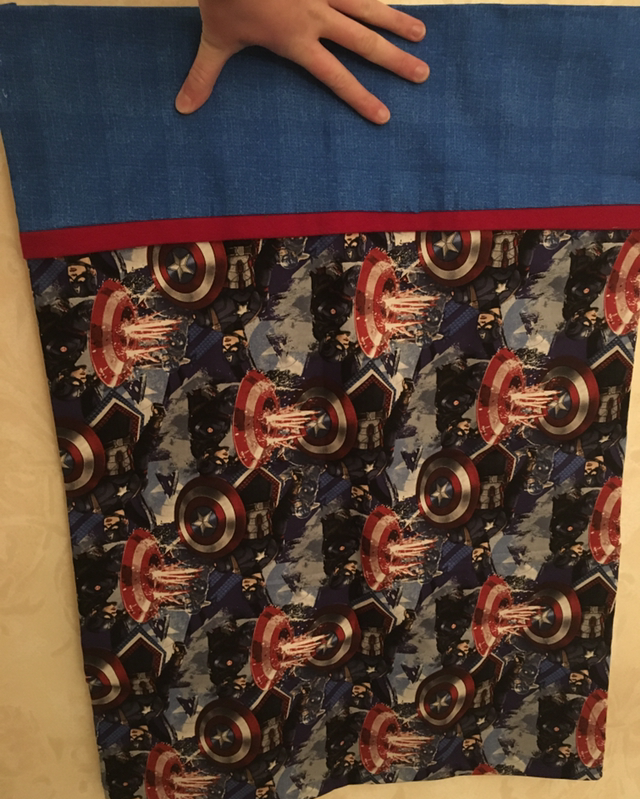

Sewing and Embroidery
10 - 16 November 2018
This week, we made hats and pillowcases using embroidery and sewing, respectively.
Assignment 1: Embroidered Hat
In embroidery, a backing is necessary to hold all the stitches in place and provide stability so the fabric does not move
or pucker while stitching. For this project, we used a cut-away backing on the inside of the hat and a water soluble backing
on the outside of the hat in order to preserve appearances. We used the Tajima embroidery machine to embroider our hats.
I am very satisfied with how my hat turned out. I think I chose good size and color for my text, and the hat itself is very warm.
Assignment 2: Pillowcase
We also made "burrito" pillowcases this week. I chose to make a Captain America - themed one for my little brother for
Christmas. Since I have used sewing machines before, that part of the process was not all that challenging. I did find it
difficult, though, to make the edges exactly square and to pin things where they needed to be pinned. I had also never done
a French seam before, so it was neat to learn that new way of sewing. A French seam is a kind of seam where the seam is hidden
on both the inside and outside.
